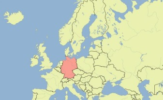
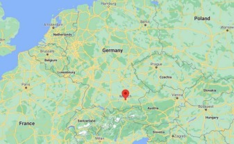
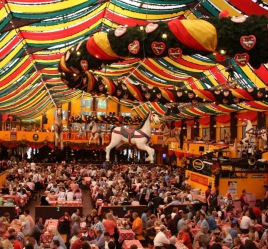
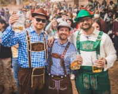
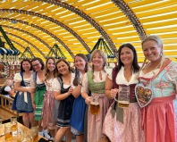
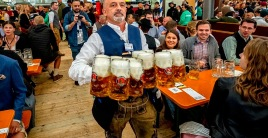
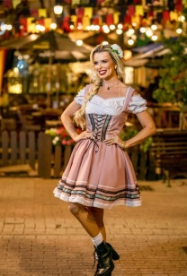

🇩🇪 Alemanha
- Capital: Berlim
- Cerca de 83,5 milhões de habitantes (2025)
- Moeda: euro
- Língua oficial: alemão
- 16 estados federados; a Baviera é o maior
Munique · Alemanha · setembro–outubro
O maior festival de cerveja do mundo
Faltam para o Oktoberfest 2027 (abertura prevista a 18 de setembro)
Clica nos botões ou nas canecas 🍺 do mapa para viajar de Munique às festas inspiradas no Oktoberfest pelo mundo.


A mostrar os mapas estáticos.

Clica num ano para saberes o que aconteceu.
No Oktoberfest, cada caneca tem uma marca de 1 litro, e os visitantes queixam-se quando vem cerveja a menos. Mostra que eras um bom empregado:
Melhor pontuação: –
0,00 L
Comédia americana sobre dois irmãos que descobrem um concurso secreto de cerveja no Oktoberfest.
Série alemã (na Netflix como Oktoberfest: Beer & Blood) sobre a luta entre cervejeiros de Munique.
Thriller de Christoph Scholder passado durante o Wiesn.
Policial de Alessandra Barabaschi para quem está a aprender alemão.
Jogo de tabuleiro em que os jogadores gerem tendas de cerveja.
Jogo de cartas para dois jogadores.
Há festas inspiradas no Oktoberfest em Kitchener-Waterloo (Canadá), Blumenau (Brasil) e Cincinnati (EUA), algumas com centenas de milhares de visitantes. O dirndl e as lederhosen ganharam também presença na moda.
Ver no mapa


